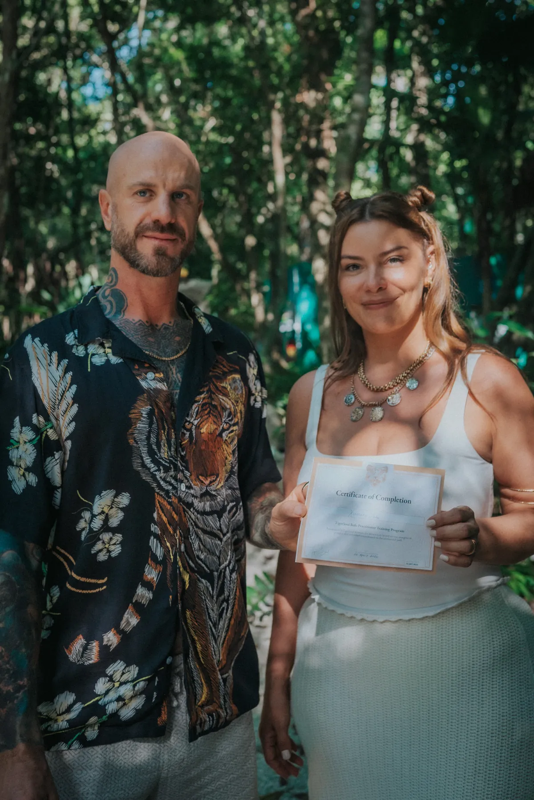

Three tracks, built to be taken in order. Each one stands alone if it is the only one you need.
Eight modules, online, at your own pace. Roughly 20 hours of material.
This is the ground floor. It is a prerequisite for the in-person intensive, and it is also the right course for someone who simply wants to understand the subject properly before deciding anything.
Structure, natural occurrence, the difference between 5-MeO-DMT and N,N-DMT, and why the phenomenology diverges so sharply.
5-HT1A and 5-HT2A binding, why the ratio matters, metabolism, duration, and what is still genuinely unsettled in the literature.
The Sonoran Desert toad, its range and its pressure, the ecological case, and the argument for synthetic material.
Archaeological claims and what actually supports them, the 1980s literature, and the fast, messy growth of the last decade.
What people report, how those reports are measured, and the limits of describing a non-dual state in ordinary language.
Cardiovascular load, serotonergic drug interactions, psychiatric history, and the adverse events that appear in the case literature.
Power, money, touch, capacity to consent, dual relationships, and what informed consent means when the state itself cannot be fully described in advance.
The weeks and months after. Meaning-making, relapse into old patterns, spiritual bypass, and when to refer someone to clinical care.
Thirteen days in the jungle outside Puerto Morelos, Mexico. Small cohort.
The first half is your own work. The second half is study: physiology, screening, ethics, emergency response, and integration practice, taught in a room with people who are doing the same thing.
The online track has to be finished before the intensive. The classroom time is worth more when nobody is starting from zero.
Capped deliberately. Anything larger stops being a training and starts being a conference.
Screening case studies, an ethics viva, and a written integration protocol. You can fail. Some people do.
Before anything else. Preparation, ceremony, rest, and the beginning of your own integration, held by the Tiger Soul team.
A full day with nothing scheduled. The curriculum resumes when people are ready to think again.
Medical intake, cardiovascular considerations, medication review, and the psychiatric history that changes the answer.
Recognising a medical emergency, escalation pathways, local emergency services, and documentation. Taught with a clinician.
Case-based. Real situations, disputed decisions, and the ones that still do not have a clean answer.
Integration frameworks, referral thresholds, scope of competence, and the closing assessment.
Ten weeks, live online, one evening a week. Built for clinicians.
Therapists, psychologists, coaches, and clergy increasingly have clients who have had a 5-MeO-DMT experience and do not know what to do with it. This course is for the person sitting across from them.
Enough pharmacology and phenomenology to understand the account your client is giving you, including why it may be hard for them to give it.
Meaning-making without leading, somatic residue, ego reconstitution, and the difference between insight and avoidance.
Prolonged destabilisation, derealisation, spiritual emergency, and the point at which this becomes a psychiatric referral.
Your own professional boundaries, your regulator, your notes, and the conversations that protect both of you.
Write to us and describe where you are. We would rather point you to the right track, or to nothing at all, than sell you the wrong one.